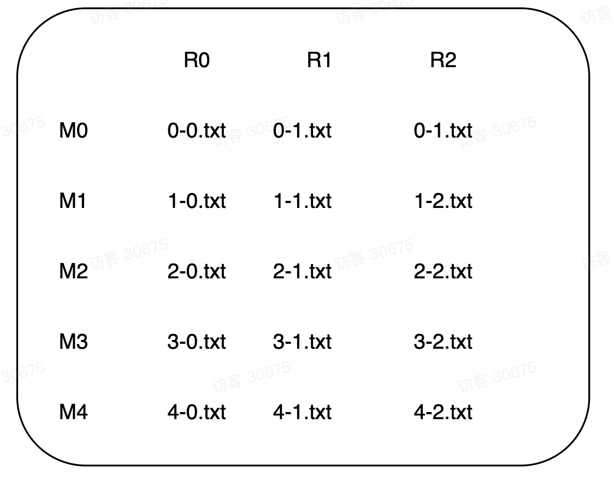

Abstract
最近终于有时间研究一下MIT的神课
6.824。这门课教
Distributed System，即多台物理隔离的计算机通过网络来协调，共同完成一致性任务，可以是计算任务，也可以是存储任务。分布式系统和单机相比，除了有很多高并发的
Partial Failures，更多的是硬件老化，断电，网卡失灵等这种现实问题。因此设计低成本高性能系统以及处理并发和网络问题——Performance性能和Fault Tolerance容错是这门课的核心。课程共有20个
Lectures和4个labs。和6.828一样重视实践——看论文，查资料，做lab~简单粗暴。所以学习过程基本上就按照如下推进：
- 提前看
Lecture要求的papers- 听对应的
Lectures- 查找
lab相关的学习资料- 做
lab之前做
6.828的时候就发现我在做这种学习过程很长，思考内容又很深的课程训练时很容易钻牛角尖而让自己乱了节奏，思维如若不能放松下来效果肯定不会太好——希望这次能尽量调整过来。
Paper
论文MapReduce:Simplified Data Processing on Large Clusters是关于Google已经淘汰掉的大规模数据集处理编程架构
MapReduce。当时的Google面临在多台机器上的大规模数据集处理比如计算PageRank或者对所有文件进行grep等。而统一化编程模型可以很好的抽象掉因为大规模集群导致的并行，网络，容错等问题——将这些细节隐藏起来，只留一个供程序员使用的编程接口可以大大提高开发效率。而工业级
MapReduce的本质就是一个利用普通机器组成的大规模计算集群进行并行，高容错，高性能的大数据处理函数框架。
理论模型
理论模型借鉴于
Lisp语言中的map/reduce函数。
2
3
4
5
6
7
8
9
10
11
12
13
14
15
16
> //key: 文档名
> //value: 文档内容
> for each word w in value:
> EmitIntermediate(w, "1");
> }
>
> void reduce (string key, Iterator values) {
> //key: 一个单词
> //value: 计数值列表
> int result = 0;
> for each v in value:
> result += ParseInt(v);
> Emit(toString(result));
> }
>
这里两个函数模型的类型分别是:
- map: (k1, v1) —> list(k2, v2)
- reduce: (k2, list(v)) —> list(v2)
对于一个
map操作，将key文档中的内容按照一定方式读取，并统计其中的w项的频率value并输出到一个中间文件上。而reduce从中间文件中读取并迭代其lists，将对应的key项统计。
这一模型可以很好的处理并行化操作——因为
map的过程可以在多台机器上并行完成而没有依赖。reduce过程也是。但是整体reduce和map之间存在着顺序依赖关系即必须是相应的map操作结束才可以唤醒reduce操作。这样的话所有的依赖和协调过程都被隐藏在
map和reduce函数的数据分发之间，而开发者可以完全不用考虑分布式细节而单独编写这两个函数以达到自己的目的。
实现
从实现角度看系统的很多行为是由
MapReduce内置的库完成的。这里有几个容易混淆的概念：
user program：用户程序，会被多次fork成为master和worker
master: 主节点，用来将task分配给相应的worker，记录工作节点的当前状态和声明周期task：map任务或者reduce任务，由相应的worker完成worker: 工作节点，用来完成相应的task
user-defined map/reduce: 开发者自定义的map/reduce函数
输入预处理
首先库函数会将输入文件切分成
M份，并在一个集群的若干台机器上启动程序的多个副本。副本中除了有一个作为主节点，其他都是工作节点。主节点将M个map任务R个reduce任务分配给空闲的工作节点（理解
task在被分配给worker后两者是一个意思）。
map工作节点（区分工作节点和用户函数）
每一个被分配map的工作节点需要读取相应内容并解析出
key/value对，并将这些作为参数提供给用户自定义的map函数，而函数输出的中间结果缓存在内存中。缓存的中间
key/value对会被划分为R块并写入本地磁盘，而这些数据对在磁盘中的相应位置会被传回主节点——由主节点再传给相应的reduce工作节点。
reduce工作节点（区分工作节点和用户函数）
保证map操作结束后，主节点唤醒reduce工作节点并告知其中间输出的磁盘位置。reduce工作节点使用RPC调用获取这些中间数据。当reduce读取完所有的数据，需要按照key对其进行排序，是为了最后迭代器统计计数提供前置条件。最后reduce工作节点迭代排好序的中间数据，并将每一个中间key和它关联一组中间value传递给用户定义的reduce函数。
shuffle过程（核心状态机）
整个map和reduce之间的数据shuffle是系统分布式的核心，关键就是map生成的中间文件及其命名。

如上图，假设有5个map工作节点和3个reduce工作节点。
- map工作节点的输出分为3类，分别由
R0，R1和R2处理，当map的解析函数一致时，相同的key一定被分到了同一个中间文件中。即0-0.txt、1-0.txt和0-2.txt三个文件中key类型的交集是空集。md5(key)%R计算map最终输出落入到哪个中间文件- 中间文件命名：map任务编号-reduce任务编号
因此5个map操作结束后会生成5*3的中间文件矩阵。
- map结束后，3个reduce工作节点通过RPC分别获取矩阵的每一列文件数据
比如R0调用
0-0.txt、1-0.txt、2-0.txt、3-0.txt、4-0.txt。因为同一列中类型相同，所以只需要内部排序。所谓
shuffle就是map/reduce对中间文件的行列操作，其结果是将中间文件进一步处理成为<value, list<key>>作为用户定义reduce函数的输入进行计数统计。
最终输出
reduce工节点处理完计数后，将结果输出到磁盘上作为下一次
MapReduce的输入。
工业级处理
在框架实现的过程中出现了很多的细节。Google在将
MapReduce工业化落地的过程中也将这些影响系统性能和可靠性的主要因素进行了优化——而一个优秀的系统本身就是在实践中不断迭代出来的，这里简单概括一下，不做详细讨论。
容错
分布式容错的本质就是如何在不可靠的硬件上构建可靠的软件。因为是大规模集群，所以很难避免
Partial Failure——从实现角度看就是各个节点的容错。
- 主节点：主节点奔溃之后会coredump到一个恢复文件中，重启后可以从最近的恢复点重新执行MapReduce
- 工作节点：奔溃后一般都要将当前的task重新分配到一个节点完成
- map：输出是一个中间文件所以符合原子提交即后面的任务会将文件覆盖
- reduce：其输出是一个持久性的文件所以需要重命名一个新的文件防止冲突
加速
当出现大规模的机器节点时，很多性能问题会成为优化的方向。比如进一步优化网络和磁盘性能。
- 局部性：在分布式系统中，输入文件传到map节点，map中间文件传到reduce节点都需要网络带宽。可以考虑将map直接分配到本地磁盘上等操作增加并行性。
- 任务粒度：M个map节点，R个reduce节点。分配太多节点导致网络带宽不够，分配太少导致并行度不够。
- 负载均衡：不同的工作节点性能也不同，如果系统卡在最后几个节点导致负载过高花费时间过长，就会让整个系统处于不平衡的状态。
Lecture1~2
go语言环境配置
作为一个
VIM重度用户我已经不用IDE很多年了。就自行配置了Vim-Go开发环境。
Go安装配置
我用
MacOs Catalina环境，下载安装就不说了。主要关注Go环境变量，需要写入相应的SHELL配置文件中，我的在.zshrc中：
GOROOT: Go语言的安装目录，一般是/usr/local/goGOPATH: 工作区即写代码的目录，一般分为三个子目录：
src
binpkgGOBIN: 存放GO语言可执行文件的目录（这里的可执行文件主要指通过go get下载并编译好的库，供直接调用的）PATH: 需要将当前的可执行文件目录放到PATH下面
2
3
4
5
6
7
export GOROOT=/usr/local/go
export GOPATH=~/go/golib:~/go/goproject #这里设置了两个工作区
export GOBIN=~/go/gobin
export PATH="$GOROOT/bin:$GOBIN:$PATH"
镜像
因为Github和Go官网不太好用，所以使用镜像来下载需要的库比较方便。
2
3
4
export GO111MODULE=on
export GOPROXY=https://goproxy.cn
二进制工具
vim-go是一个开发go的vim插件。我使用vundle包管理工具来管理vim插件。
2
3
Plugin 'fatih/vim-go'
因为这个插件启动还需要一些和二进制工具，具体的列表可打开
"~/.vim/bundle/vim-go/plugin/go.vim"如下：

常规做法是在
vim命令行模式下面直接执行:GoInstallBinaries来自动安装。如果没有安装代理的话尽管有镜像还是很容易出错，所以我的做法是一个一个从官网上go get然后go insatll手动安装。
2
3
$ go install github.com/go-delve/delve/cmmd/dlv@laatest #使用go install手动安装
如果按照前面的方式配置好了环境变量，那这些二进制工具就会被安装在
~/go/gobin目录下。验证方式就是打开vim之后不会有插件报错信息。
Lab1
To conclude
在学习过程用到的资料列举如下: